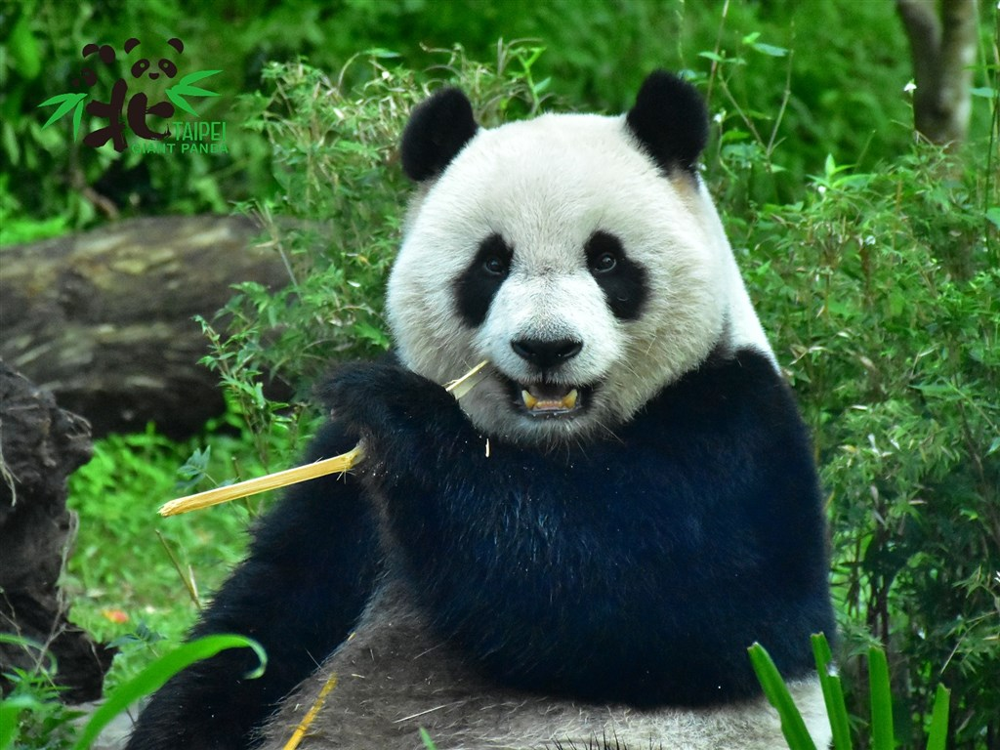

大熊貓館
| 團團(大熊貓) | |
|---|---|

|
團團是一隻雄性大熊貓，它在四川臥龍自然保護區的編號是第19號，2004年9月1日出生，乳名「小乖乖」。2022年下旬，團團被診斷出腦部病變、且病況惡化快速，由於並沒有熊貓腦部手術的前例，動物園園方只能以緩和治療舒緩團團的症狀。父親：靈靈。母親：華美，是「海歸」貓熊。配偶：圓圓，雌性，四川臥龍自然保護區第16號，2004年8月30日出生。 |
| 性格：大智若愚的美食主義者。 | |
| 圓圓(大熊貓) | |
|  | 圓圓是一隻雌性大熊貓，它在四川臥龍自然保護區的編號是第16號，2004年8月30日出生。父親：琳琳。母親：雷雷，是有英雄母親之美譽的斷掌熊貓。配偶：團團，雄性，四川臥龍自然保護區第19號，2004年9月1日出生。外號小乖乖，是海歸雌性熊貓華美的後代。 |
| 性格：個性勇敢、機靈果斷。 | |